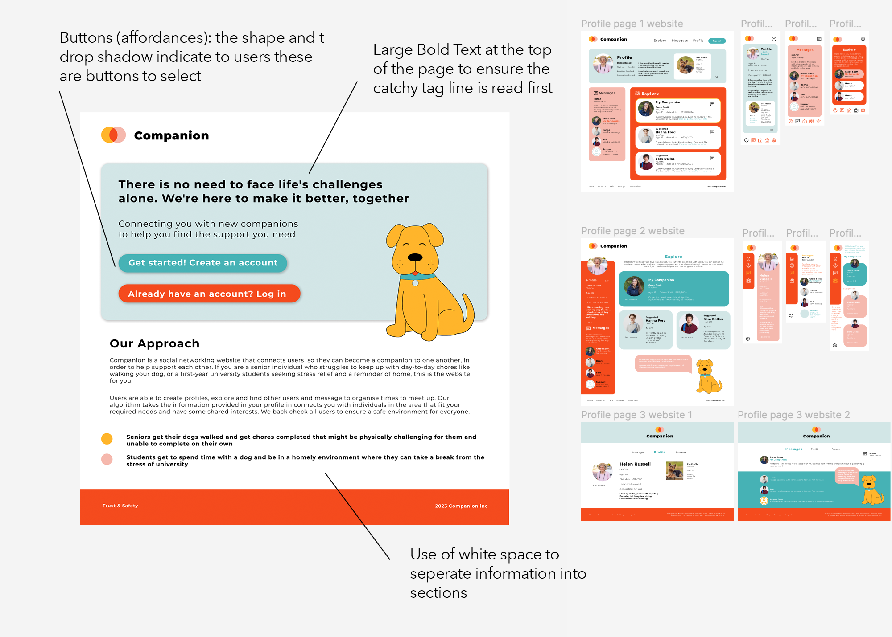
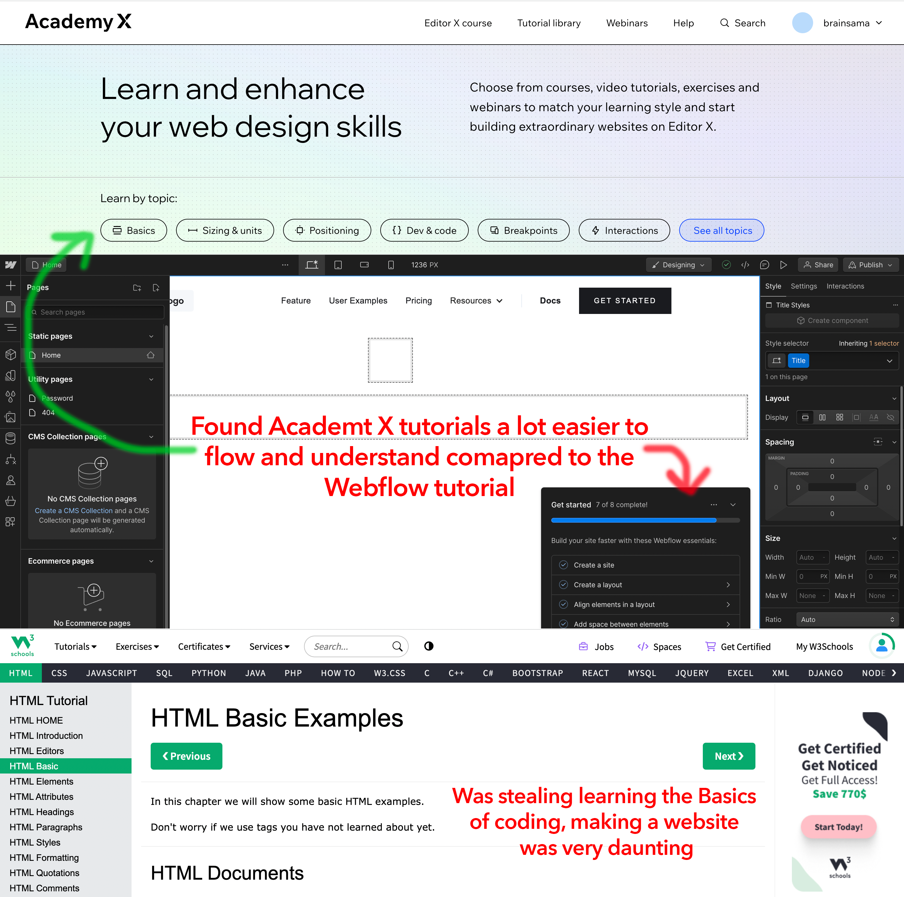
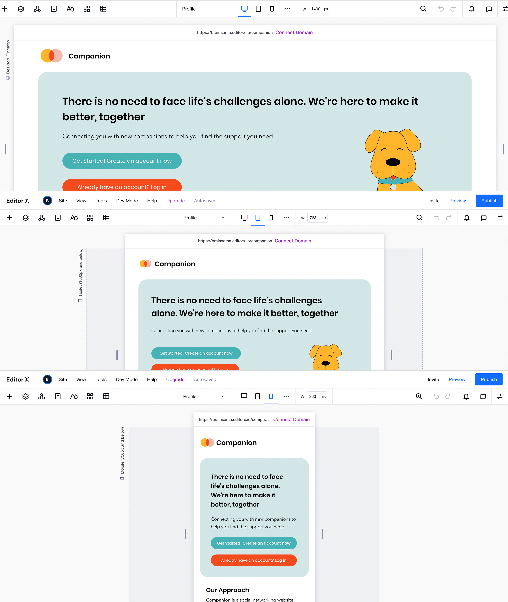
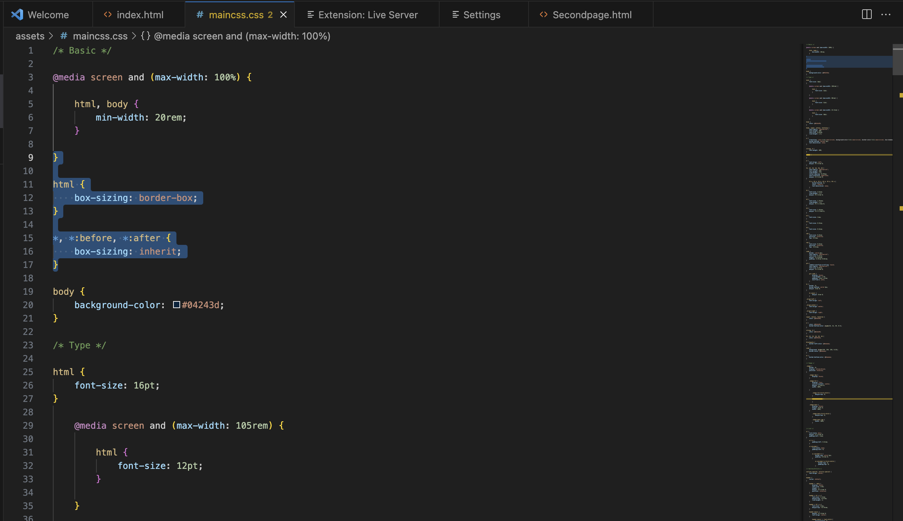
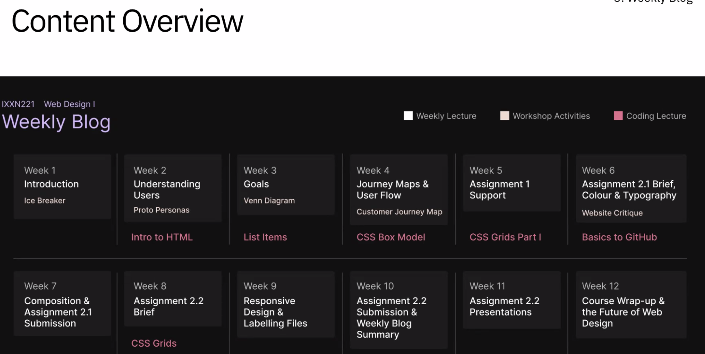

September 3rd - October 13th
Hello again, and welcome to the second segment of my Weekly Blog for Web Design 1. As I continue the course and transition to Assignments 2 and 3, I am beginning to put into practice some of the knowledge and skills we've learned so far. The second half of the semester will be more challenging than the first, as it requires me to explore new platforms and implement new skills. Even though my skill set is only the very basics, finally applying some of the course's learnings is very rewarding.

In today's lecture, we discussed different features to consider when designing for the web. When carefully considered and applied, the composition of a website can make a significant difference on the user experience. First, we looked at grids, which is the layout of the page and the different features consisting of the margin, columns and gutter spacing. Grids create consistency and can be used to visually separate elements using negative space to help with visual hierarchy. Visual hierarchy is all about guiding the eye on the page in order of importance. Visual hierarchy controls the delivery of the website as it forms the path for users to follow. Visual hierarchy can be implemented through:
Colour: creates contrast and can direct the user's attention to specific elements. For example, bright colours grab the user's attention on a dull page.
Scale: users notice larger elements first. For example, larger font sizes and heavier font weights will draw user's attention first.
White space: more space around elements draws the eye towards them.
Balance: equally distributed elements focus the user's attention on the centre of the page
We then discussed affordances, the little prompts that indicate to users how to interact with elements. An example is how links are blue and underlined to indicate that users can click on the link and be directed to a different page. User's past experiences and knowledge assist affordances with interacting with websites, such as knowing what symbols mean without needing words. As a designer, it is important to consider how we can implement affordances to remove some of the user mental load when interacting with websites. When implementing affordances, it is important not to assume all users have the same past experience, and therefore, not all affordances will always be effective.

The time has come to implement some of the new skills I have learned in the course so far. Moving on from the first half of Assignment 2, I have created the design for my website and now need to translate this design into a functional website, either through CSS or coding. I spent a lot of time contemplating which path to take. Initially, due to my lack of confidence in coding, I thought I was better off attempting to code for Assignment 2.2 as it is worth 17.5% compared to Assignment 3, which is worth 30%. I signed up to different coding programs and experimented with the different platforms to get a feel for what worked for me. After evaluating my options, I decided to start making my assignment 2.2 on Editor X and face the challenge of coding when I reached the blog.
I initially struggled using Editor X as it was an unfamiliar platform, but I quickly found it was extremely useful for focusing on the functionality of my website. Watching tutorials, I was able to build my design framework more efficiently than I expected. Given that this part of the assignment involved reproducing the designs from the first half into a functional website, Editor X proved to be an ideal platform for this task. Looking ahead to coding the blog, I won't be limited to replicating designs, so I will have more freedom to create a layout within my coding abilities.

In this assignment, the concept of responsiveness became necessary when creating my design. A responsive website is a website that can seamlessly adapt to various screen sizes so the website is functional on any device. The process of achieving this level of responsiveness while ensuring the layout remained somewhat consistent involved continuous adjustments to the layout and components. I had never really considered the need for responsiveness in web design until this assignment. It was very eye-opening to see how much more effort and consideration is required when creating a functional website.

For Assignment 3, I need to code a blog with entries for each week of the course. I started looking for some inspiration for my blog design. I really liked the design of this week's site of the week. I particularly like the use of white space and having the content centred with wide margins.
Regarding the layout I want to use, I am considering using the layout from a template as I am not very confident in making my own from scratch. While exploring various layout options, I struggled to grasp the concept of float layouts and was drawn to flexible box layouts. After learning about responsive website design, the Flexible Box layout is the most practical in ensuring my design remains adaptable and responsive to different screen sizes. I found a template on HTML 5 that used a flexbox layout and incorporated lots of negative space, which I was looking for. The tutorials on W3Schools were incredibly helpful in understanding the code and flex box containers, allowing me to alter the template to my liking.

To start my blogging process, I'm revisiting various Vstream videos to refresh my knowledge. One of the most challenging aspects for me is figuring out where to begin. My current strategy involves hands-on exploration of the HTML template I've chosen for my project. I'm exploring the code, making changes and removing sections to understand how the layout functions. With the help of W3Schools, I'm working through the code sections, which are conveniently labelled, helping me understand the code better. I've noticed there's a fair bit of extra code that hasn't been covered in our course. So, I'm streamlining the template, simplifying it to a basic website layout that I fully understand and can recreate in my own project files.

Reflecting on the overall web design course, I have really enjoyed myself and learned a lot. The course introduced me to lots of new content and concepts, pushing me to put in the extra time and effort to learn and understand every aspect. I believe one of the most essential traits for a designer is open-mindedness, this allows for adaptability and a continuous drive to enhance skill sets. This course reiterated the significance of challenging myself and embracing the learning that comes with making mistakes, an essential growth factor for any designer.
As explored in this course, design is constantly evolving due to technological advances, cultural shifts, and user expectations. Finding myself in a situation where I had to step out of my comfort zone, learn, and adapt has been very beneficial. My Web design skills have significantly progressed from static designs to creating responsive, fully functional websites.